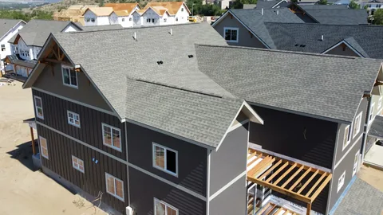
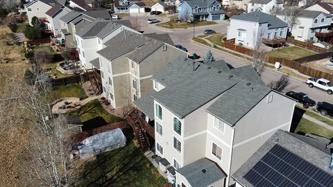
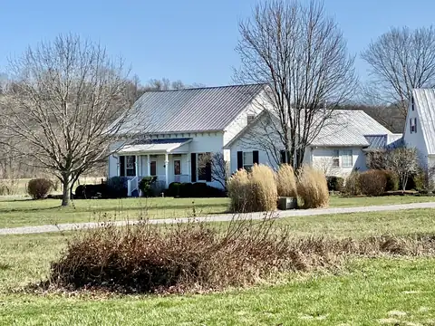
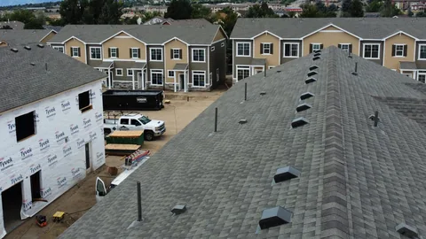
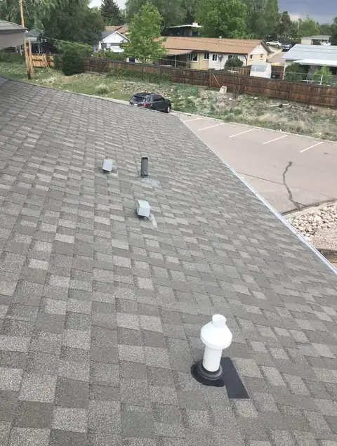
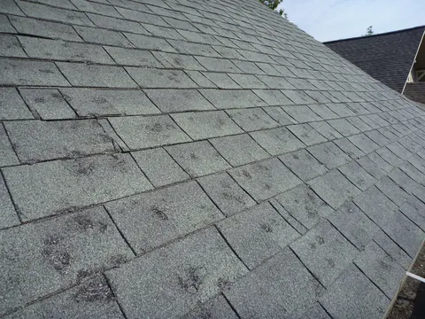
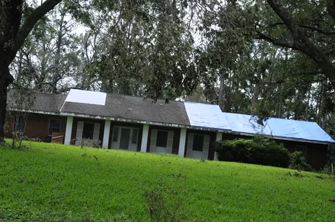

Blog
Roofing articles for East Tennessee homes
Plain answers on roofs, gutters, siding and windows around Knoxville: what things cost, what storms do, and what to check before you call anyone.

What a roof replacement costs around Knoxville

Drones in roofing: where they help and where a ladder still wins
Choosing replacement windows: types and frames

Metal roof over shingles? Why tear-off is usually better
Matching roof, siding and trim colors

K-style or half-round gutters
A once-a-year roof check you can do from the driveway

Six signs your siding is done
What replacement windows save on a power bill

Seven signs a roof is near the end
How long each kind of roof lasts in East Tennessee
Picking a shingle color for your house style
How to clear a clogged downspout

After a hailstorm: handling the knock at your door
Vinyl siding in a humid climate: pros and cons
Shingle upgrades worth asking about
What's under your shingles
What a roof inspection should cover before you buy a house
Repair or replace siding? How to tell
Thinking about solar? Check the roof first
Metal roof or shingles for an East Tennessee house
Where roofs leak: valleys, boots, chimneys and skylights

A tree on the roof: the first hour
Getting a house ready for a Tennessee winter
Gutter guards under oaks and pines: what works
Siding styles, from lap to board and batten
Architectural or 3-tab shingles for an East Tennessee house
Light or dark shingles in a Tennessee summer
What summer heat does to a roof and the attic under it
Buying a house with an older roof: what to ask for
Hail in East Tennessee: what it does to shingles and what to photograph
Spring storms, straight-line wind and your roof
How long gutters last, and the signs yours are done
The words on a roofing estimate, explained
Roof leaking right now? Five things to do first
When to clean gutters under East Tennessee trees